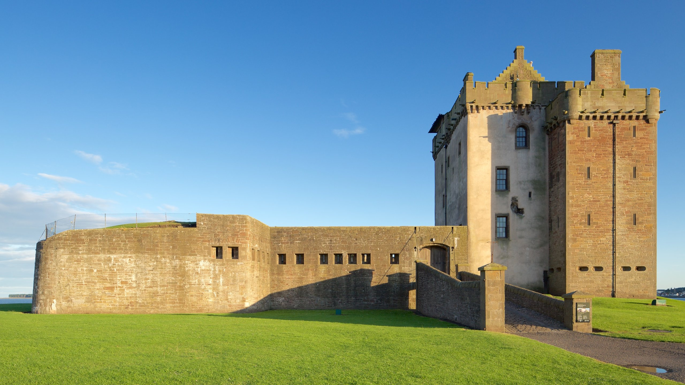
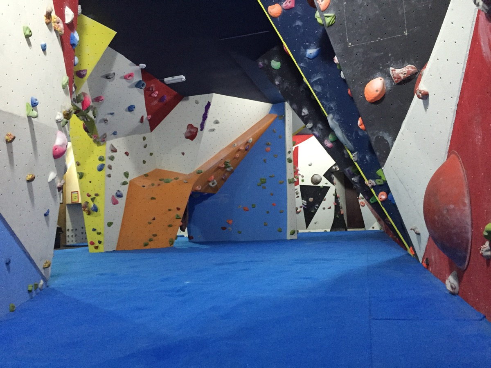
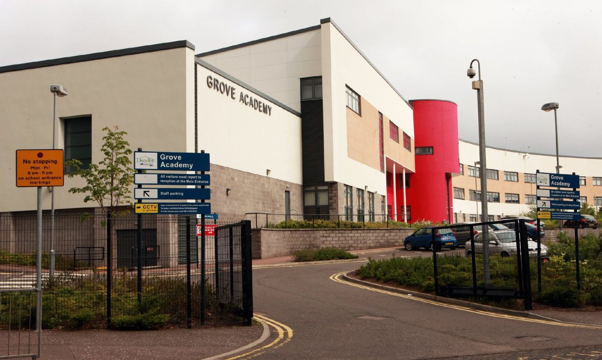

About
I am Cameron, an enthusiastic individual with a variety of skills.
I live in Broughty Ferry which is an area in the east of Dundee. The area is located on the coast of the River Tay, with a large beach, and has a castle (image bottom left) dating back to the 15th century overlooking the Tay.
One thing I like to do in my spare time is indoor climbing, which I do at Avertical World - see image bottom centre - located in Dundee City Centre.
I attended Forthill Primary School - within the Broughty Ferry area of Dundee - between 2011 and 2018, gaining a large variety of important skills.
After finishing P7 at Forthill Primary, I attended Grove Academy, also in Broughty Ferry, from 2018 until the end of S6 in 2024 (pictured bottom right). During my time at Grove Academy I gained many National 5 and Higher qualifications in various subjects.
More recently I became a student at Dundee University studying IT Management for Business, starting in September 2024.


